In this document, we walk through the submodel areas covered by FEM, illustrating them via static structure UML class and object diagrams. Attributes are not always shown unless they are relevant to the discussion.
Namespace/Package constructs inherited from CWM:
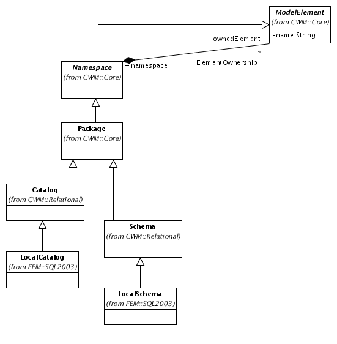
The ElementOwnership association is used to model both
catalog/schema and schema/object containment. For example, suppose
the following DDL is executed:
create schema blogs;
set schema 'blogs';
create table bloggers(
id int not null primary key,
name varchar(128) not null,
handle varchar(128) not null unique,
email_addr varchar(128) not null);
LOCALDB catalog, which already exists) and linked:
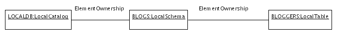
Note that any ModelElement can be contained in a schema,
meaning extension models can define their own first-class objects
beyond the standard ones by inheriting from ModelElement.
NamedColumnSet.
The association between a NamedColumnSet and the
Column objects which define its structure is modeled on
the more abstract notion of a class and its attributes:
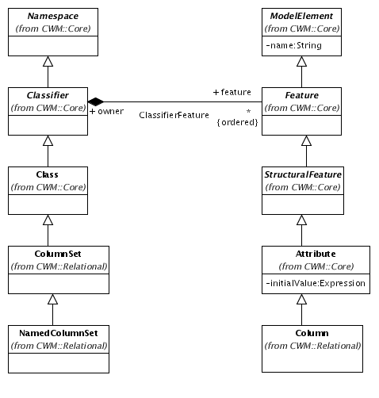
In particular, FEM defines tables and views as descendants of
NamedColumnSet, and differentiates between columns of
tables and views:
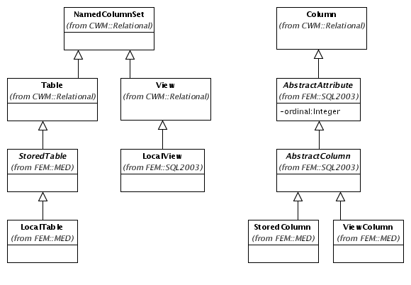
Here is a corresponding object diagram for the previous example:
Note that the generic ElementOwnership association is
not used to model the containment of columns by a table;
instead, the more specific ClassifierFeature association
is used. However, since Classifier subclasses
Namespace, the ElementOwnership association
may be used for a table's containment of non-column objects such as
constraints.
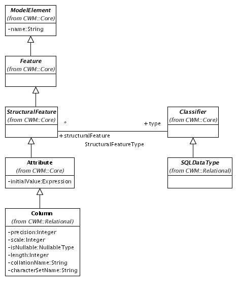
Details of allowed datatypes are covered in a later
section. The initialValue attribute is used to store
any DEFAULT value (the Expression class is covered in the
next section on views).
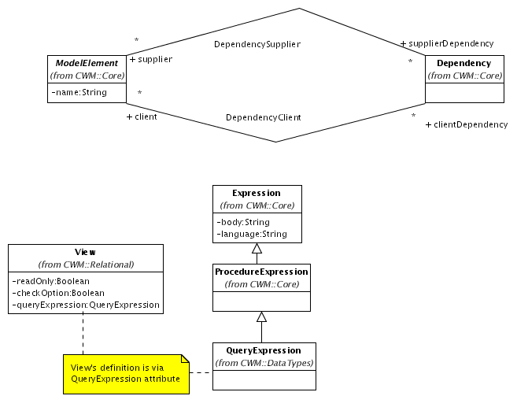
A single instance of class Dependency is created per view
to hold all dependencies, and only direct dependencies are recorded
(rather than the transitive closure). Consider this addition to
our running DDL example:
create table topics(
id int not null primary key,
blogger_id int not null references bloggers(id),
name varchar(128) not null,
creation_time timestamp not null);
create view blogger_topics as
select bloggers.name as blogger_name,topics.name as topic_name
from bloggers,topics
where bloggers.id=topics.blogger_id
create view breakfast_topics as
select *
from blogger_topics
where upper(topic_name) like '%BREAKFAST%';
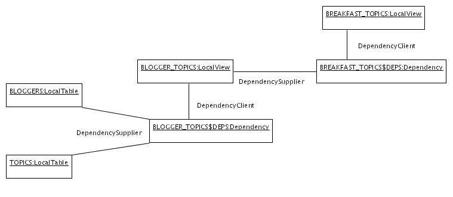
Besides views, other kinds of dependencies are recorded by Farrago, but the rest are not covered by this document.
Table and with direct
associations to the constrained columns (as subclasses of
StructuralFeature):
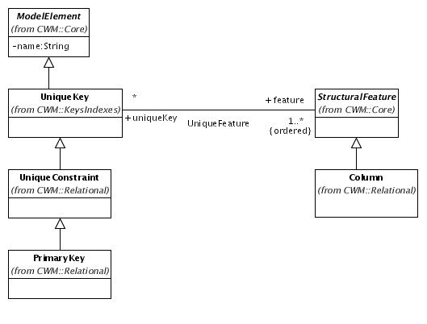
Note the many-to-many association. This is difficult to query via SQL, and does not provide the constraint column ordinals needed for metadata views. Hence, in FEM, we add a redundant one-to-many association and intersection class, and another level of constraint hierarchy:
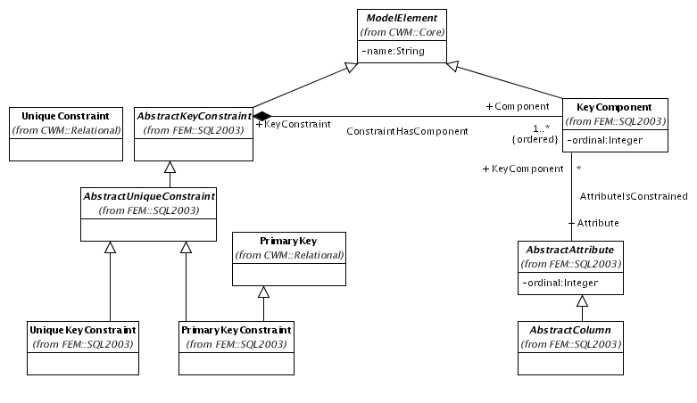
Here's an object diagram for the constraints on the BLOGGERS
table:
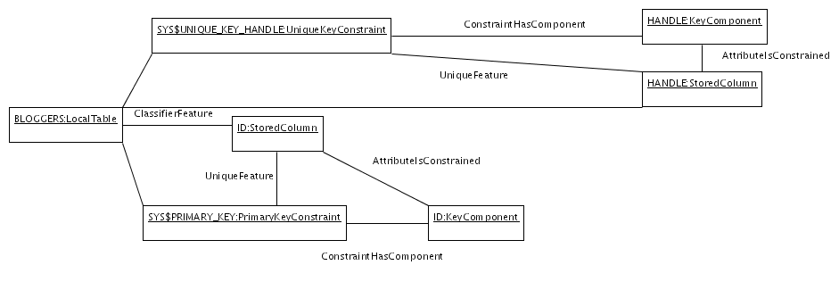

Unlike constraints, indexes are contained directly by schemas, but the containing schema must be the same as the schema of the indexed table. Given the following DDL:
create index blogger_id_name_idx
on bloggers(id,name);
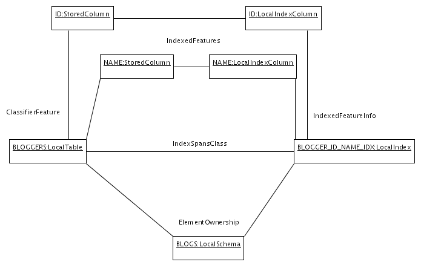
SQLDataType:
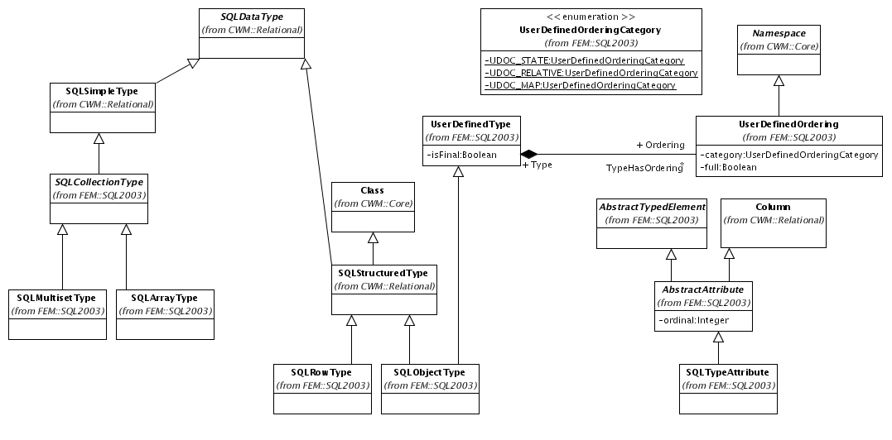
Instances of SQLSimpleType represent builtin types such
as VARCHAR and INTEGER and are populated as
singletons when the repository is initialized. Farrago also supports:
MULTISET; SQLMultisetType and
SQLArrayType are parameterized by a component type, and
so are instantiated anonymously as part of the definition of a typed
element (for example, if columns A and B both declare their type to be
INTEGER MULTISET, two anonymous instances of this type
will be constructed)
SQLRowType is
instantiated with the ROW type constructor as part of the definition
of a typed element
SQLObjectType
is instantiated with the CREATE TYPE statement and can
subsequently be referenced by many typed elements
SQLTypeAttribute. For collection types,
a single type attribute with name COMPONENT is created to
represent the component type. Named user-defined types can also have
associated instances of UserDefinedOrdering.
Finally, the CREATE TYPE statement also supports creation
of distinct types, which are strongly-typed user-defined
aliases for simple types:
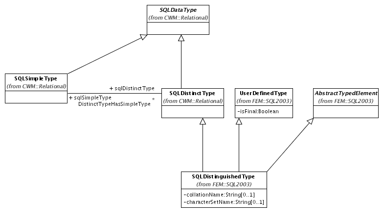
For this example DDL:
create type url as (
protocol varchar(10),
host varchar(128),
path varchar(1024)
) final;
create type ip_addr as bigint final;
create table access_log(
id int not null primary key,
resource url not null,
client_addr ip_addr not null,
post_data tinyint multiset
);

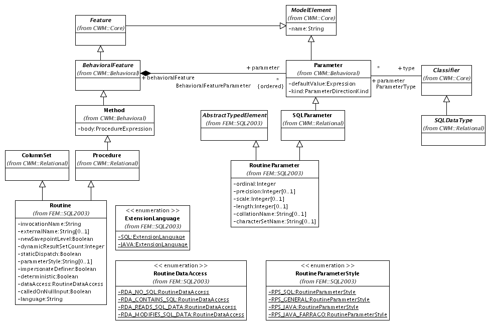
Note that Routine subclasses ColumnSet.
This inheritance is not currently used, but will be in the future once
procedures which produce result sets are supported. TBD: methods,
UDX's, schema paths, and example object diagrams; also update class
diagram for DYNAMIC_FUNCTION attribute described in ../design/UserDefinedTypesAndRoutines.html.
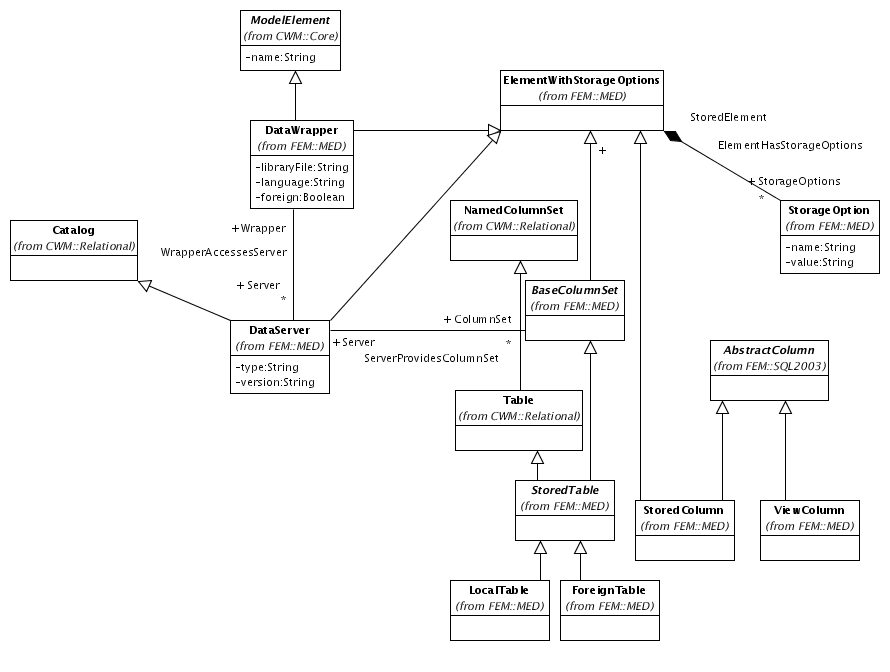
TBD: explanation and example object diagrams.
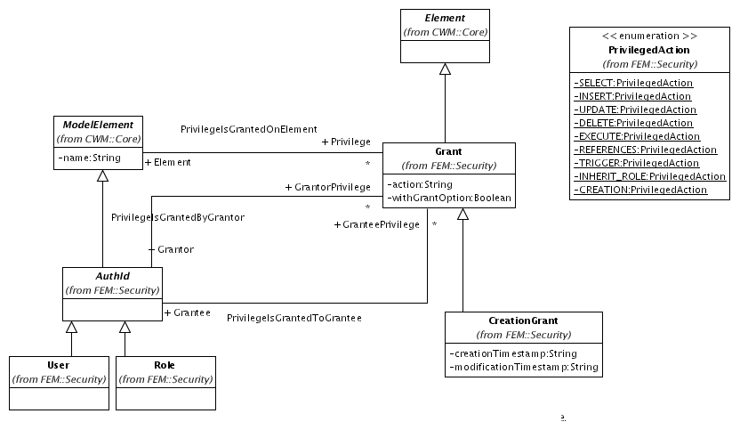
TBD: explanation and example object diagrams.